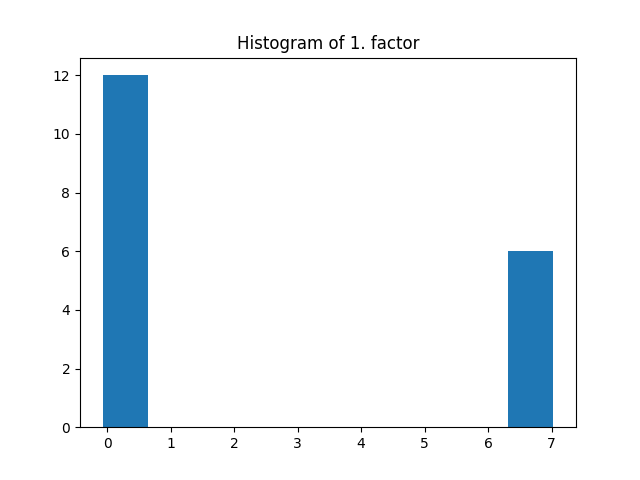
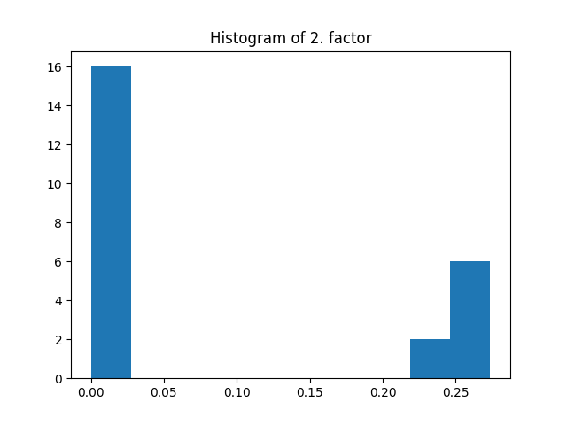
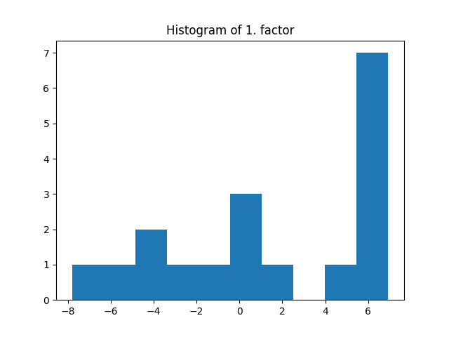
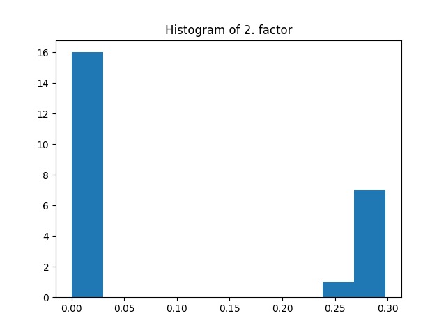
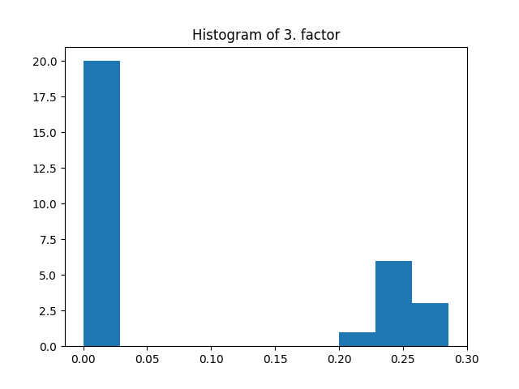

Note
Click here to download the full example code
Constrained CP decomposition in Tensorly >=0.7
On this page, you will find examples showing how to use constrained CP/Parafac.
Introduction
Since version 0.7, Tensorly includes constrained CP decomposition which penalizes or constrains factors as chosen by the user. The proposed implementation of constrained CP uses the Alternating Optimization Alternating Direction Method of Multipliers (AO-ADMM) algorithm from [1] which solves alternatively convex optimization problem using primal-dual optimization. In constrained CP decomposition, an auxilliary factor is introduced which is constrained or regularized using an operator called the proximal operator. The proximal operator may therefore change according to the selected constraint or penalization.
Tensorly provides several constraints and their corresponding proximal operators, each can apply to one or all factors in the CP decomposition:
- Non-negativity
non_negative in signature
Prevents negative values in CP factors.
- L1 regularization
l1_reg in signature
Adds a L1 regularization term on the CP factors to the CP cost function, this promotes sparsity in the CP factors. The user chooses the regularization amount.
- L2 regularization
l2_reg in signature
Adds a L2 regularization term on the CP factors to the CP cost function. The user chooses the regularization amount.
- L2 square regularization
l2_square_reg in signature
Adds a L2 regularization term on the CP factors to the CP cost function. The user chooses the regularization amount.
- Unimodality
unimodality in signature
This constraint acts columnwise on the factors
Impose that each column of the factors is unimodal (there is only one local maximum, like a Gaussian).
- Simplex
simplex in signature
This constraint acts columnwise on the factors
Impose that each column of the factors lives on the simplex or user-defined radius (entries are nonnegative and sum to a user-defined positive parameter columnwise).
- Normalization
normalize in signature
Impose that the largest absolute value in the factors elementwise is 1.
- Normalized sparsity
normalized_sparsity in signature
This constraint acts columnwise on the factors
Impose that the columns of factors are both normalized with the L2 norm, and k-sparse (at most k-nonzeros per column) with k user-defined.
- Soft sparsity
soft_sparsity in signature
This constraint acts columnwise on the factors
Impose that the columns of factors have L1 norm bounded by a user-defined threshold.
- Smoothness
smoothness in signature
This constraint acts columnwise on the factors
Favor smoothness in factors columns by penalizing the L2 norm of finite differences. The user chooses the regularization amount. The proximal operator in fact solves a banded system.
- Monotonicity
monotonicity in signature
This constraint acts columnwise on the factors
Impose that the factors are either always increasing or decreasing (user-specified) columnwise. This is based on isotonic regression.
- Hard sparsity
hard_sparsity in signature
This constraint acts columnwise on the factors
Impose that each column of the factors has at most k nonzero entries (k is user-defined).
While some of these constraints (2, 3, 4, 6, 8, 9, 12) require a scalar input as its parameter or regularizer, boolean input could be enough for other constraints (1, 5, 7, 10, 11). Selection of one of these constraints for all mode (or factors) or using different constraints for different modes are both supported.
import numpy as np
import tensorly as tl
from tensorly.decomposition import constrained_parafac
import matplotlib.pyplot as plt
np.set_printoptions(precision=2)
# tensor generation
tensor = tl.tensor(np.random.rand(6, 8, 10))
rank = 3
Using one constraint for all modes
Constraints are inputs of the constrained_parafac function, which itself uses the
tensorly.tenalg.proximal.validate_constraints function in order to process the input
of the user. If a user wants to use the same constraint for all modes, an
input (bool or a scalar value or list of scalar values) should be given to this constraint.
Assume, one wants to use unimodality constraint for all modes. Since it does not require
any scalar input, unimodality can be imposed by writing True for unimodality:
_, factors = constrained_parafac(tensor, rank=rank, unimodality=True)
This constraint imposes that each column of all the factors in the CP decomposition are unimodal:
fig = plt.figure()
for i in range(rank):
plt.plot(factors[0][:, i])
plt.legend(['1. column', '2. column', '3. column'], loc='upper left')
Constraints requiring a scalar input can be used similarly as follows:
_, factors = constrained_parafac(tensor, rank=rank, l1_reg=0.05)
The same regularization coefficient l1_reg is used for all the modes. Here the l1 penalization induces sparsity given that the regularization coefficient is large enough.
fig = plt.figure()
plt.title('Histogram of 1. factor')
_, _, _ = plt.hist(factors[0].flatten())
fig = plt.figure()
plt.title('Histogram of 2. factor')
_, _, _ = plt.hist(factors[1].flatten())
- 
- 
Using one constraint for some modes
As a second option, constraint can be used for only a few selected modes by using a python dictionary:
_, factors = constrained_parafac(tensor, rank=rank, non_negative={0: True, 2: True})
print("1. factor\n", factors[0])
print("2. factor\n", factors[1])
Out:
1. factor
[[0. 0.34 0.55]
[0. 0.49 0.55]
[0. 0.91 0.21]
[0. 0.33 0.67]
[0. 0.44 0.56]
[0. 0.76 0.4 ]]
2. factor
[[0.32 1.63 1.55]
[0.34 1.73 1.59]
[0.34 1.3 2.08]
[0.37 0.9 2.92]
[0.34 0.84 2.71]
[0.38 1.66 2.14]
[0.36 1.22 2.47]
[0.36 0.6 3.1 ]]
Since only the first and last factors are chosen, entries on the second mode factor could be negative.
Using a constraint with the different scalar inputs for each mode
One may prefer different scalar value for each mode. It is possible by using a list structure:
_, factors = constrained_parafac(tensor, rank=rank, l1_reg=[0.01, 0.02, 0.03])
fig = plt.figure()
plt.title('Histogram of 1. factor')
_, _, _ = plt.hist(factors[0].flatten())
fig = plt.figure()
plt.title('Histogram of 2. factor')
_, _, _ = plt.hist(factors[1].flatten())
fig = plt.figure()
plt.title('Histogram of 3. factor')
_, _, _ = plt.hist(factors[2].flatten())
- 
- 
- 
Using different constraints for each mode
To use different constraint for different modes, the dictionary structure should be preferred:
_, factors = constrained_parafac(tensor, rank=rank, non_negative={1:True}, l1_reg={0: 0.01},
l2_square_reg={2: 0.01})
In the dictionary, key is the selected mode and value is a scalar value or only True depending on the selected constraint.
print("1. factor\n", factors[0])
print("2. factor\n", factors[1])
print("3. factor\n", factors[2])
Out:
1. factor
[[-16.68 -16.78 -13.17]
[-19.1 -5.82 15.41]
[-16.79 -12.85 4.88]
[-19.51 -16.14 16.92]
[-18.94 1.29 8.44]
[-19.06 -20.91 -2.31]]
2. factor
[[0.36 0. 0. ]
[0.38 0.12 0. ]
[0.37 0.5 0. ]
[0.41 0.5 0.46]
[0.39 1.09 0. ]
[0.43 0. 0. ]
[0.41 0.7 0.56]
[0.4 0.5 1.33]]
3. factor
[[-0.06 -0.01 -0. ]
[-0.07 0.02 0.02]
[-0.08 0.01 -0. ]
[-0.06 -0. -0.01]
[-0.06 -0.02 0. ]
[-0.08 0.01 -0.01]
[-0.06 -0. -0.01]
[-0.06 -0. 0. ]
[-0.08 0.02 -0.02]
[-0.06 -0.01 0.01]]
Thus, first factor will be non-negative, second factor will be regularized by \(0.01\) with \(l_1\) and last factor will be regularized by \(0.01\) with \(l_2^2\).
References
[1] Huang, Kejun, Nicholas D. Sidiropoulos, and Athanasios P. Liavas. “A flexible and efficient algorithmic framework for constrained matrix and tensor factorization.” IEEE Transactions on Signal Processing 64.19 (2016): 5052-5065. (Online version)
Total running time of the script: ( 0 minutes 3.542 seconds)